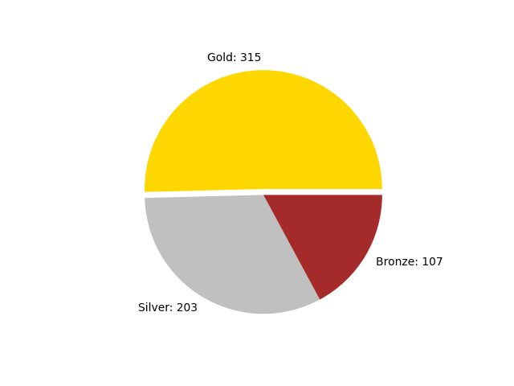
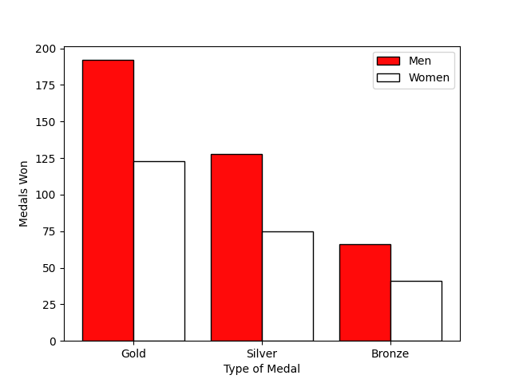
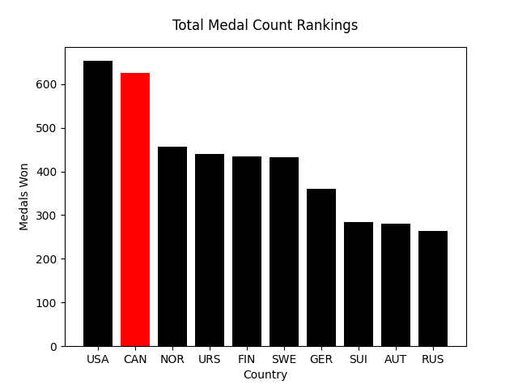
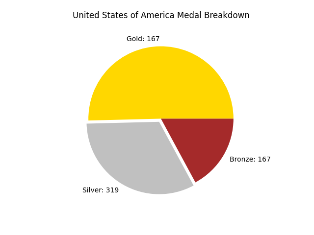
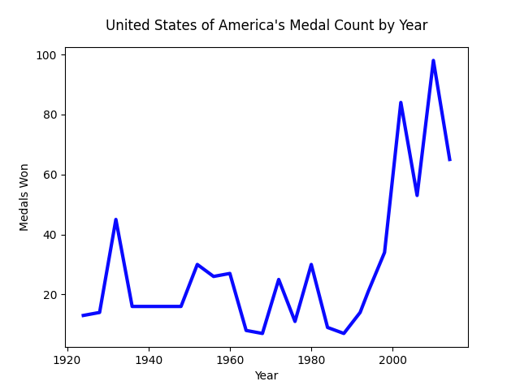
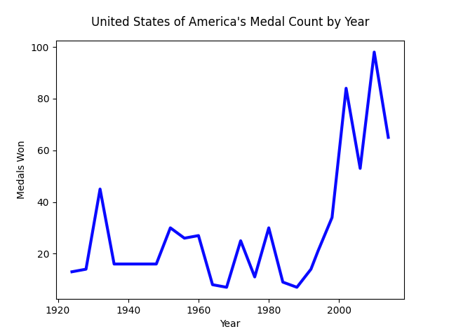

Canada at the Winter Olympics
Canada, my home country and, of course, my favourite country. Everyone knows Canada for its cold climates and proficieny at hockey, but how does Canada perform at the Winter Olympics. Well lets take a look at how Canada has done from 1896 to 2014!
Data Point 1
Canada's Basic Stats
data graphics
 Canada is a country that goes hard or goes home. The majority of medals won by Canada are gold medals, with 315 medals, more than Canada's amount of silver and bronze medals combined. Men have the majority of medals won, but women aren't sitting by idly. Women have a significant amount of medals, with 239 out of 625 medals.
Data Point 2
Canada's Position
data graphics
 Canada is one of the strongest countries, if not the strongest. Canada comes in at second in total medal count with 625 medals. Canada is only beaten by the United States of America with 653 total medals while no other country is that close to Canada. As for gold medals though, Canada has the United States beat with 315 medals to 167 medals. America has more silver medals and bronze medals than Canada. Depending on how much worth you put into the type of medal, there is an argument for Canada being the best.
Data Point 2
How is Canada Doing Recently?
data graphics
 

Canada has been doing better in recent years. Canada peaked in 2010 with 91 medals won, but that is only 1 medal more than 2014. Compared to our greatest competition, the United States of America this isn't too amazing though, as they have also followed an upward trend in medal count. Canada is still more consistent than America however, as America has greater peaks and lows while Canada stays more stable.